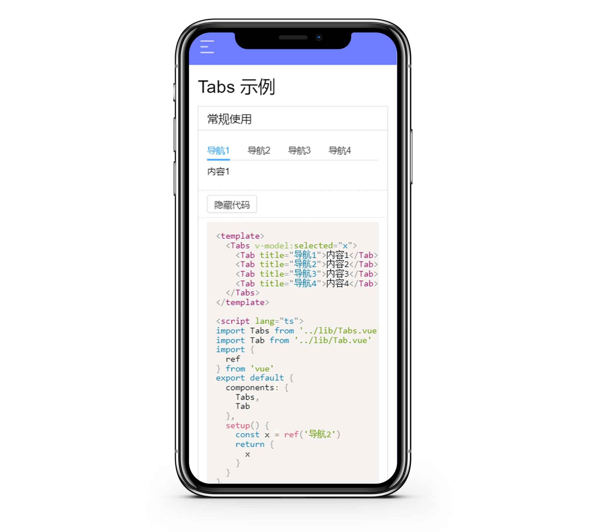
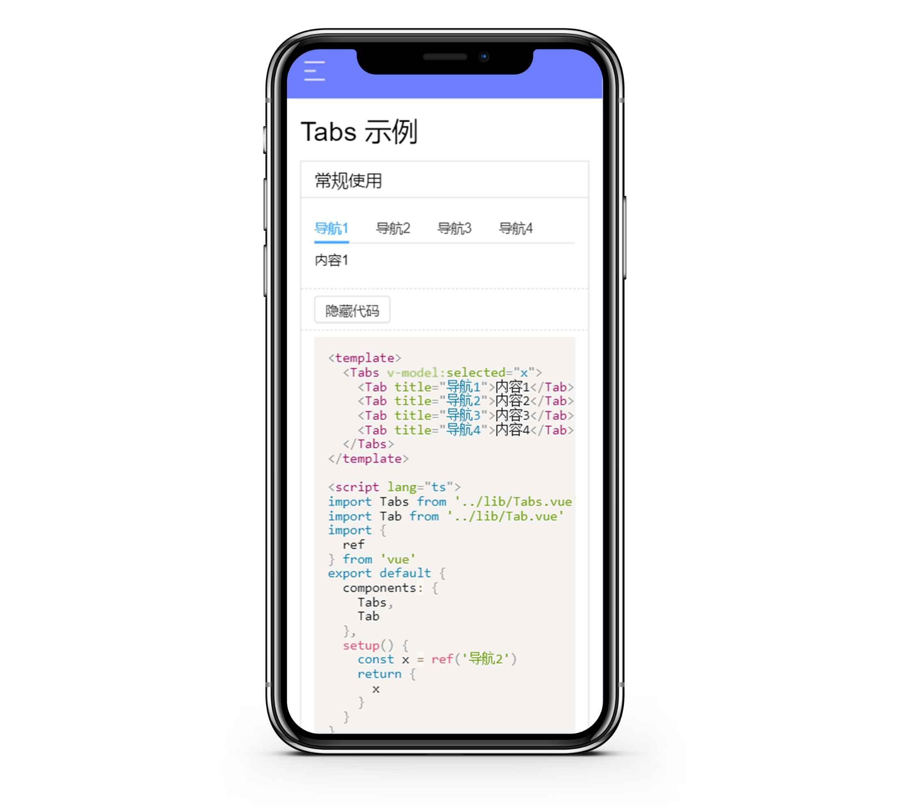
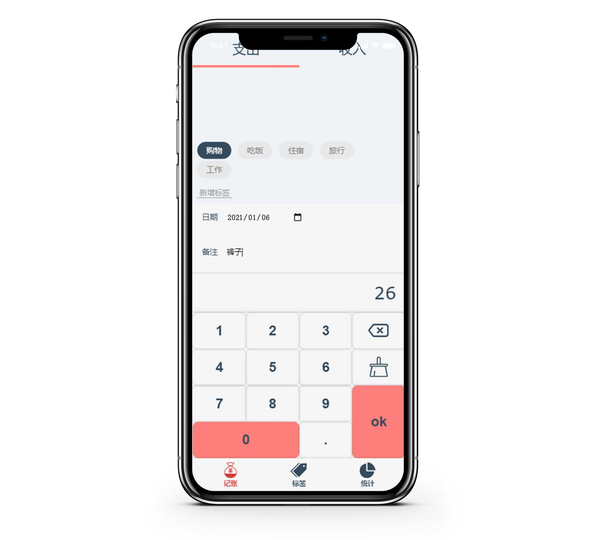
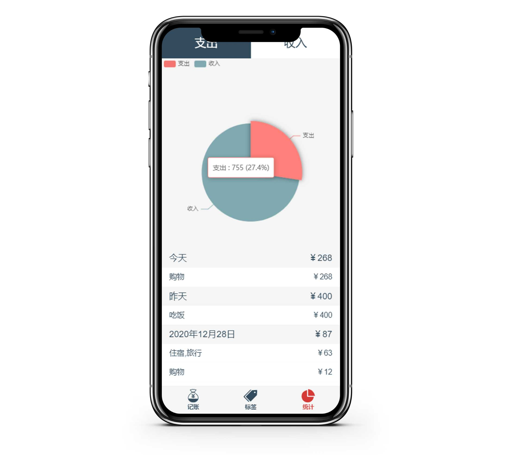
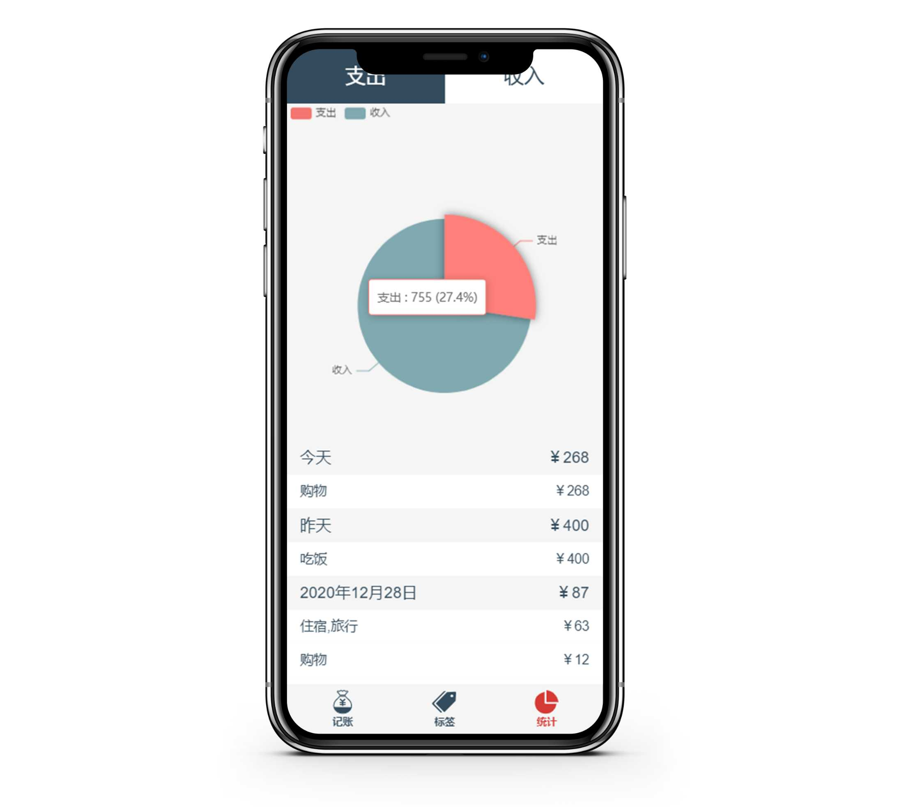

专业技能
- 能够使用HTML标签编写语义化页面
- 熟悉 CSS/SCSS ，文档流 ， 盒模型 ，flex/grid布局定位
- 了解 JavaScript ，ES6+语法，jQuery ，DOM操作，Ajax，JSONP，跨域，闭包，原型链，面向对象，TypeScript 的使用
- 了解 Webpack / Npm / Yarn / Echart / ElementUI / Antd
- 熟悉 Vue / Vuex / vue-router全家桶的使用
- 有node.js的使用经验
- 了解Webpack的配置，npm/yarn包管理的机制
- 熟悉Git/GitHub工作部署流程
- 可以看懂英文文档
项目经历
IN-UI 一个轻便的Vue3 UI框架
-
.png)
 

项目描述
- 从设计到开发该项⽬是参照Vant的UI 库思路，做的⼀套 基于 Vue3 的简易UI 组件库
- 内置Button、Switch、Dialog、Tabs等常见的UI组件,前端工程化模块化的代码简洁明了有利于阅读和维护
- 内置MD文档样式，根据文档研究Vue3,使用了setup、onMounted、watchEffect、ref、computed等API。 同时也添加了 移动端适配 ，支持手机PC同时预览
- 统一打包发布npm，流程化
使用技术
- 技术栈: TypeScript / Vue3 / Router4 / SCSS
- 项目源码: https://github.com/Logansheng/IN-UI-Code
- 预览项目: 点击查看 | 移动端预览
IN-Life
-

 

项目描述
- 由本⼈独⽴设计并采⽤Vue 2.6 +TypeScript开发实现。
- 应用使用Vue-router划分了三个大页面 标签，记账，统计，实现了复杂信息保存，标签管理，数据统计展示 等主要功能，使用Vuex+Localstorage实现状态管理，记录了所有对基站的增删改查记录，使用day.js实现时间管理
使用技术
- 技术栈: TypeScript / Vue2 / Vue Router / Vuex / Echart / Day.js / ES6 / SCSS
- 项目源码: https://github.com/Logansheng/IN-life-APP
- 预览项目: 点击查看 | 移动端预览
Pikachu
- Pikachu是⼀个使⽤原⽣JS开发的，动态显示 CSS 画⼀个皮卡丘 过程的⼩作品。该作品主要思路是通过间隔计时器遍历预先设置样式代码，将其 ⼀个个显示在⻚⾯上，并在 style 标签上作同样处理，以使代码 CSS ⽣效。此外 增加调速按钮，以增加⽤户体验。以 ⾯向对象 的思想：对 JS 代码进⾏封装
- 技术栈：原生js、es6
- 项目源码: https://github.com/Logansheng/pikachu
- 预览项目: 点击查看
开源项目
canvas实现画板功能
画板是⼀个使⽤ 原⽣Canvas 开发的，可以⾃定义画画的作品。该作品 主要思路是通过 根据⽤户的⿏标或者触摸获取当前位置， 将其显示在⻚⾯上，此
外增加 修改颜⾊，画笔宽度，清空画板，保存按钮 ，以增加⽤户体验。⽀持 PC 和 ⼿机端。
简易jQuery封装DOM库
该项⽬是本⼈在学习原⽣DOM编程和jQuery过程中，参考jQuery的核⼼ 思想对原⽣DOM进⾏的⼀个简易封装，加深了我对DOM与jQuery的理解，并写了 ⼀篇个⼈博客记录总结。